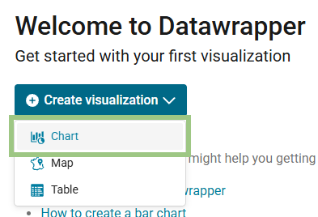

Step 4: Create a New Chart
From the Datawrapper dashboard, click the dropdown bar labeled "Create Visualization" and select Chart to begin a new project.

Datawrapper offers several visualization types, including bar charts, line charts, maps, and scatterplots. For this tutorial, select Bar Chart, as it is well-suited for comparing population values across Michigan counties. After selecting the visualization type, the user will be brought to the Upload Data page.